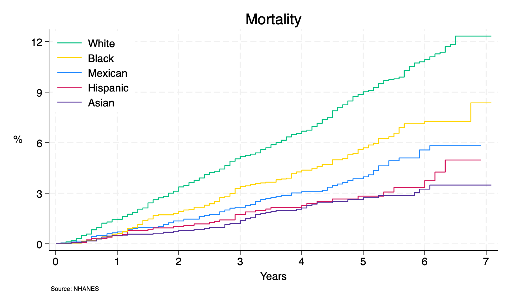
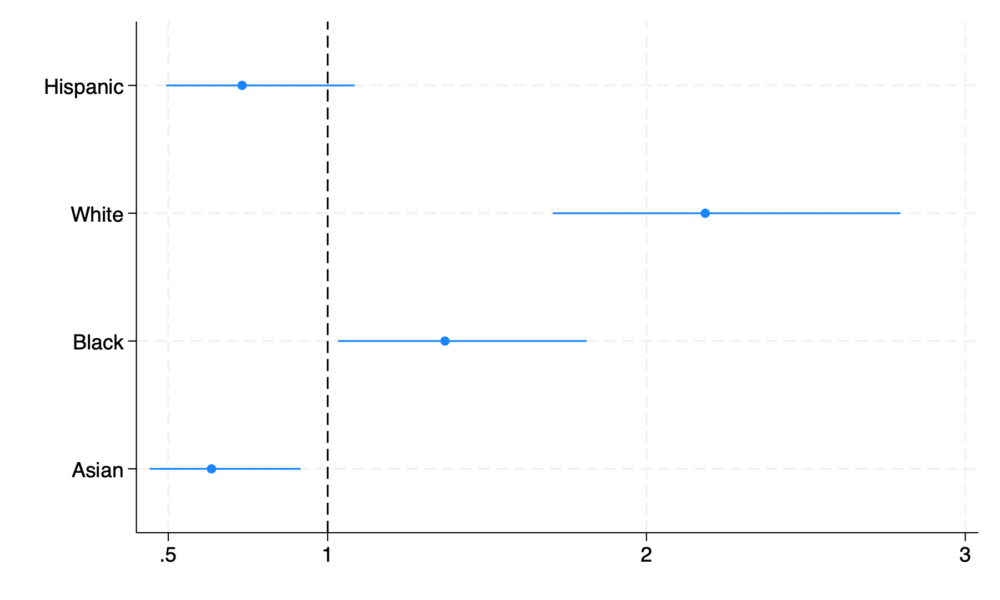
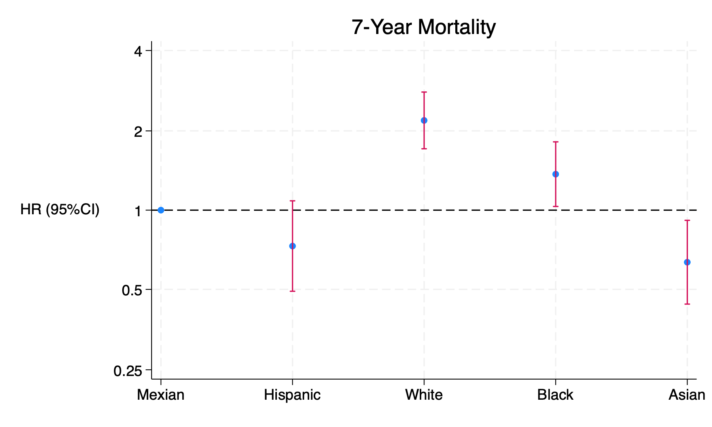

cls
if 1 {
nhanes_fena, ys(2013) ye(2018) mort
table1_fena
}
if 0 {
riagendr mortstat
ridreth1
seqn ridageyr permth_int permth_exm
}
if 0 {
g years=permth_exm/12
stset years, fail(mortstat==1)
label define Race ///
1 "Mexican" ///
2 "Hispanic" ///
3 "White" ///
4 "Black" ///
5 "Asian"
label values ridreth1 Race
}
if 0 {
sts graph, ///
by(ridreth1) ///
fail ///
per(100) ///
ti("Mortality") ///
ylab(0(3)12, ///
format(%2.0f) ///
) ///
xlab(0(1)7) ///
xti("Years") ///
yti("%", orientation(horizontal)) ///
caption("Source: NHANES",size(2)) ///
legend(on ///
ring(0) ///
pos(11) ///
lab(1 "Mexican") ///
lab(2 "Hispanic") ///
lab(3 "White") ///
lab(4 "Black") ///
lab(5 "Asian") ///
order(3 4 1 2 5) ///
)
graph export mortality_race.png, replace
}
if 0 {
stcox i.ridreth1
matrix define cox=r(table)
matrix list cox
coefplot, xline(1) xlabel(.5 1 2 3) eform
graph export fig1_coefplot.png, replace
}
if 0 {
clear
matrix c=cox'
svmat c
matrix list c
g x=_n
foreach v of varlist c1 c5 c6 {
replace `v'=log(`v')
}
twoway (scatter c1 x)(rcap c5 c6 x, ///
yline(0) ///
xlab(1 "Mexian" 2 "Hispanic" 3 "White" 4 "Black" 5 "Asian") ///
ylab(-1.39 "0.25" -0.69 "0.5" 0 "1" 0.69 "2" 1.39 "4" ) ///
xti("") ///
yti("HR (95%CI)", orientation(horizontal)) ///
legend(off) ///
ti("7-Year Mortality") ///
)
graph export fig1_manual.png, replace
}
Mortality#

Coefplot#

User#
